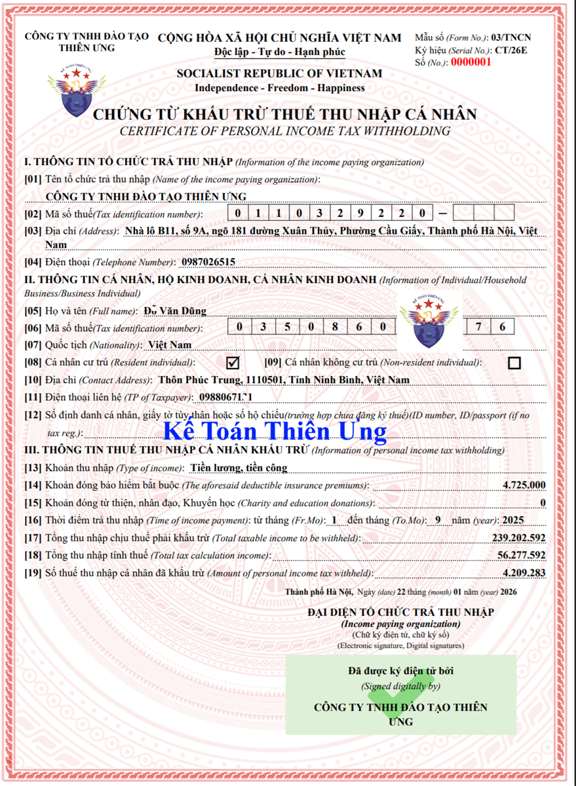

Chứng từ khấu trừ thuế TNCN là loại chứng từ dùng để ghi nhận thông tin về Khoản thu nhập, thời điểm trả thu nhập, tổng thu nhập chịu thuế, số thuế đã khấu trừ... của cá nhân người lao động có thu nhập
Theo quy định tại Điểm a Khoản 3 Điều 1 Nghị định 70/2025/NĐ-CP Sửa đổi, bổ sung khoản 2, khoản 3 Điều 4 của Nghị định số 123/2020/NĐ-CP thì:
3. Trước khi sử dụng hóa đơn, chứng từ, doanh nghiệp, tổ chức kinh tế, tổ chức khác, hộ kinh doanh, cá nhân kinh doanh, tổ chức, cá nhân khấu trừ thuế thu nhập cá nhân, tổ chức thu thuế, phí, lệ phí, phải thực hiện đăng ký sử dụng với cơ quan thuế hoặc thực hiện thông báo phát hành theo quy định tại Điều 15, Điều 34 và khoản 1 Điều 36 Nghị định này. Đối với hóa đơn, biên lai do cơ quan thuế đặt in, cơ quan thuế thực hiện thông báo phát hành theo khoản 3 Điều 24 và khoản 2 Điều 36 Nghị định này.
2. Khi khấu trừ thuế thu nhập cá nhân, khi thu thuế, phí, lệ phí, tổ chức, cá nhân khấu trừ thuế, tổ chức thu thuế, phí, lệ phí phải lập chứng từ khấu trừ thuế, biên lai thu thuế, phí, lệ phí giao cho người có thu nhập bị khấu trừ thuế, người nộp thuế, nộp phí, lệ phí và phải ghi đầy đủ các nội dung theo quy định tại Điều 32 Nghị định này. Trường hợp sử dụng chứng từ điện tử thì phải theo định dạng chuẩn dữ liệu của cơ quan thuế. Trường hợp cá nhân ủy quyền quyết toán thuế thì không cấp chứng từ khấu trừ thuế thu nhập cá nhân.
Đối với cá nhân không ký hợp đồng lao động hoặc ký hợp đồng lao động dưới 03 tháng thì tổ chức, cá nhân trả thu nhập cấp chứng từ khấu trừ thuế cho mỗi lần khấu trừ thuế hoặc cấp một chứng từ khấu trừ cho nhiều lần khấu trừ thuế trong một năm tính thuế khi cá nhân yêu cầu. Đối với cá nhân ký hợp đồng lao động từ 03 tháng trở lên, tổ chức, cá nhân trả thu nhập chỉ cấp cho cá nhân một chứng từ khấu trừ thuế trong một năm tính thuế.
1. Mẫu chứng từ khấu trừ thuế TNCN điện tử theo Nghị định 70/2025/NĐ-CP
|
Mẫu số 03/TNCN
CỘNG HÒA XÃ HỘI CHỦ NGHĨA VIỆT NAM Độc lập - Tự do - Hạnh phúc --------------- CHỨNG TỪ KHẤU TRỪ THUẾ THU NHẬP CÁ NHÂN
I. THÔNG TIN TỔ CHỨC TRẢ THU NHẬP [01] Tên tổ chức trả thu nhập: ……………………………… [02] Mã số thuế: ...................................................................... [03] Địa chỉ: ............................................................................ [04] Điện thoại: ............................................................... II. THÔNG TIN CÁ NHÂN, HỘ KINH DOANH, CÁ NHÂN KINH DOANH [05] Họ và tên: ................................................................ [06] Mã số thuế: .............................................................. [07] Quốc tịch: ............................................................ [08] Cá nhân cư trú [09] Cá nhân không cư trú [10] Địa chỉ: ............................................................ [11] Điện thoại liên hệ: ................................................... [12] Số định danh cá nhân, giấy tờ tùy thân hoặc số hộ chiếu (Trường hợp chưa đăng ký thuế): ....................................................... III. THÔNG TIN THUẾ THU NHẬP CÁ NHÂN KHẤU TRỪ [13] Khoản thu nhập: [14] Khoản đóng bảo hiểm bắt buộc [15] Khoản đóng từ thiện, nhân đạo, khuyến học: [16] Thời điểm trả thu nhập: Từ tháng: ...........đến tháng: .............năm. [17] Tổng thu nhập chịu thuế phải khấu trừ: [18] Tổng thu nhập tính thuế: [19] Số thuế thu nhập cá nhân đã khấu trừ:
|
Trên đây là Mẫu số 03/TNCN là CHỨNG TỪ KHẤU TRỪ THUẾ THU NHẬP CÁ NHÂN được ban hành Kèm theo phụ lục III của Nghị định số 70/2025/NĐ-CP ngày 20 tháng 3 năm 2025 của Chính phủ
Lưu ý: Nghị định 70/2025/NĐ-CP Ban hành ngày 20/3/2025 sửa đổi Nghị định 123/2020/NĐ-CP ngày 19/10/2020 quy định về hóa đơn, chứng từ.
Nghị định 70/2025/NĐ-CP có hiệu lực thi hành từ ngày 01/6/2025.
Lưu ý đặc biệt quan trọng:
Theo khoản 2 điều 12 của thông tư 32/2025/TT-BTC thì:
Kể từ thời điểm Nghị định số 70/2025/NĐ-CP ngày 20/3/2025 của Chính phủ có hiệu lực thi hành, tổ chức khấu trừ thuế thu nhập cá nhân phải ngừng sử dụng chứng từ khấu trừ thuế thu nhập cá nhân điện tử đã thực hiện theo các quy định trước đây và chuyển sang áp dụng chứng từ khấu trừ thuế thu nhập cá nhân điện tử theo quy định tại Nghị định số 70/2025/NĐ-CP ngày 20/3/2025 của Chính phủ. Đối với chứng từ khấu trừ thuế thu nhập cá nhân đã thực hiện theo các quy định trước đây phát hiện chứng từ khấu trừ thuế thu nhập cá nhân đã lập sai sau khi áp dụng Nghị định số 70/2025/NĐ-CP thì lập chứng từ khấu trừ thuế thu nhập cá nhân điện tử mới thay thế cho chứng từ khấu trừ thuế thu nhập cá nhân đã lập sai.
=> Bắt đầu từ ngày 01/06/2025 trở đi, Doanh nghiệp phải chuyển sang áp dụng chứng từ khấu trừ thuế thu nhập cá nhân điện tử theo quy định tại Nghị định số 70/2025/NĐ-CP
=> Bắt đầu từ ngày 01/06/2025 trở đi, Doanh nghiệp phải chuyển sang áp dụng chứng từ khấu trừ thuế thu nhập cá nhân điện tử theo quy định tại Nghị định số 70/2025/NĐ-CP
2. Mẫu chứng từ khấu trừ thuế TNCN điện tử năm 2026 mới nhất theo NĐ 70/20252/NĐ-CP và thông tư 32/2025/TT-BTC

Thông tư số 32/2025/TT-BTC ngày 31 tháng 05 năm 2025 của Bộ trưởng Bộ Tài chính thì Mẫu ký hiệu trên chứng từ khấu trừ thuế thu nhập cá nhân điện tử được quy định như sau:
1. Ký hiệu mẫu chứng từ khấu trừ thuế thu nhập cá nhân gồm có 07 ký tự là 01/CTKT.
2. Ký hiệu chứng từ khấu trừ thuế thu nhập cá nhân gồm 06 ký tự gồm cả chữ viết và chữ số được quy định như sau:
+ Hai chữ đầu “CT/” là chữ viết tắt của chứng từ;
+ Hai ký tự tiếp theo là hai (02) chữ số Ả-rập thể hiện năm lập chứng từ khấu trừ thuế thu nhập cá nhân điện tử được xác định theo 2 chữ số cuối của năm dương lịch.
+ Chữ cuối là chữ “E” thể hiện hình thức chứng từ là điện tử
Ví dụ: CT/26E: Chứng từ khấu trừ thuế thu nhập cá nhân điện tử lập và cấp cho người nộp thuế trong năm 2026.
- Số chứng từ khấu trừ thuế thu nhập cá nhân điện tử là số thứ tự được thể hiện trên chứng từ khấu trừ thuế thu nhập cá nhân điện tử. Số chứng từ khấu trừ thuế thu nhập cá nhân điện tử được ghi bằng chữ số Ả-rập có tối đa 7 chữ số bắt đầu từ số 1 vào ngày 01 tháng 01 hoặc ngày bắt đầu sử dụng chứng từ khấu trừ thuế thu nhập cá nhân điện tử và kết thúc vào ngày 31 tháng 12 hàng năm.
- Tại bản thể hiện, ký hiệu mẫu, ký hiệu chứng từ khấu trừ thuế thu nhập cá nhân điện tử và số chứng từ khấu trừ thuế thu nhập cá nhân điện tử được thể hiện ở phía trên bên phải của chứng từ khấu trừ thuế thu nhập cá nhân (hoặc ở vị trí dễ nhận biết).
3. Cấp chứng từ khấu trừ thuế TNCN như thế nào?
Khi khấu trừ thuế thu nhập cá nhân thì phải lập chứng từ khấu trừ thuế giao cho người có thu nhập bị khấu trừ thuế và phải ghi đầy đủ các nội dung theo quy định tại Điều 32 Nghị định này.
Đối với cá nhân không ký hợp đồng lao động hoặc ký hợp đồng lao động dưới 03 tháng thì tổ chức, cá nhân trả thu nhập cấp chứng từ khấu trừ thuế cho mỗi lần khấu trừ thuế hoặc cấp một chứng từ khấu trừ cho nhiều lần khấu trừ thuế trong một năm tính thuế khi cá nhân yêu cầu. Đối với cá nhân ký hợp đồng lao động từ 03 tháng trở lên, tổ chức, cá nhân trả thu nhập chỉ cấp cho cá nhân một chứng từ khấu trừ thuế trong một năm tính thuế.
Đối với cá nhân không ký hợp đồng lao động hoặc ký hợp đồng lao động dưới 03 tháng thì tổ chức, cá nhân trả thu nhập cấp chứng từ khấu trừ thuế cho mỗi lần khấu trừ thuế hoặc cấp một chứng từ khấu trừ cho nhiều lần khấu trừ thuế trong một năm tính thuế khi cá nhân yêu cầu. Đối với cá nhân ký hợp đồng lao động từ 03 tháng trở lên, tổ chức, cá nhân trả thu nhập chỉ cấp cho cá nhân một chứng từ khấu trừ thuế trong một năm tính thuế.
4. Trường hợp nào thì không được cấp chứng từ khấu thuế TNCN:
Trường hợp cá nhân ủy quyền quyết toán thuế thì không cấp chứng từ khấu trừ thuế thu nhập cá nhân.
5. Nội dung trên chứng từ khấu trừ thuế TNCN
Theo Điểm a Khoản 18 Điều 1 Nghị định 70/2025/NĐ-CP Sửa đổi, bổ sung khoản 1, điều 32 của Nghị định 123/2020/NĐ-CP thì Chứng từ khấu trừ thuế có các nội dung sau:
Theo Điểm a Khoản 18 Điều 1 Nghị định 70/2025/NĐ-CP Sửa đổi, bổ sung khoản 1, điều 32 của Nghị định 123/2020/NĐ-CP thì Chứng từ khấu trừ thuế có các nội dung sau:
a) Tên chứng từ khấu trừ thuế; ký hiệu mẫu chứng từ khấu trừ thuế, ký hiệu chứng từ khấu trừ thuế, số thứ tự chứng từ khấu trừ thuế;
b) Tên, địa chỉ, mã số thuế của tổ chức, cá nhân chi trả thu nhập;
c) Tên, địa chỉ, số điện thoại, mã số thuế của cá nhân nhận thu nhập (nếu cá nhân đã có mã số thuế) hoặc số định danh cá nhân;
d) Quốc tịch (nếu người nộp thuế không thuộc quốc tịch Việt Nam);
đ) Khoản thu nhập, thời điểm trả thu nhập, tổng thu nhập chịu thuế, khoản đóng bảo hiểm bắt buộc; khoản từ thiện, nhân đạo, khuyến học; số thuế đã khấu trừ;
e) Ngày, tháng, năm lập chứng từ khấu trừ thuế;
g) Họ tên, chữ ký của người trả thu nhập.
Trường hợp sử dụng chứng từ khấu trừ thuế thu nhập cá nhân điện tử thì chữ ký trên chứng từ điện tử là chữ ký số.
6. Thời điểm lập chứng từ khấu trừ thuế TNCN
Theo Khoản 17 Điều 1 Nghị định 70/2025/NĐ-CP Sửa đổi, bổ sung điều 31 của Nghị định 123/2020/NĐ-CP thì:
Theo Khoản 17 Điều 1 Nghị định 70/2025/NĐ-CP Sửa đổi, bổ sung điều 31 của Nghị định 123/2020/NĐ-CP thì:
1. Tại thời điểm khấu trừ thuế thu nhập cá nhân, thời điểm thu thuế, phí, lệ phí, tổ chức khấu trừ thuế thu nhập cá nhân, tổ chức thu thuế, phí, lệ phí, phải lập chứng từ, biên lai giao cho người có thu nhập bị khấu trừ thuế, người nộp các khoản thuế, phí, lệ phí.
2. Thời điểm ký số trên chứng từ là thời điểm tổ chức, cá nhân khấu trừ thuế thu nhập cá nhân, tổ chức thu thuế, phí, lệ phí điện tử sử dụng chữ ký số để ký trên chứng từ điện tử được hiển thị theo định dạng ngày, tháng, năm của năm dương lịch.
Đối với cá nhân không ký hợp đồng lao động hoặc ký hợp đồng lao động dưới 03 tháng thì tổ chức, cá nhân trả thu nhập cấp chứng từ khấu trừ thuế cho mỗi lần khấu trừ thuế hoặc cấp một chứng từ khấu trừ cho nhiều lần khấu trừ thuế trong một năm tính thuế khi cá nhân yêu cầu. Đối với cá nhân ký hợp đồng lao động từ 03 tháng trở lên, tổ chức, cá nhân trả thu nhập chỉ cấp cho cá nhân một chứng từ khấu trừ thuế trong một năm tính thuế.
Để hiểu rõ hơn về các quy định liên quan đến chứng từ khấu trừ thuế TNCN và cách lập chứng từ khấu trừ thuế TNCN thì Kế Toán Diệu Tâm mời các bạn chi tiết tại đây:
Để hiểu rõ hơn về các quy định liên quan đến chứng từ khấu trừ thuế TNCN và cách lập chứng từ khấu trừ thuế TNCN thì Kế Toán Diệu Tâm mời các bạn chi tiết tại đây: